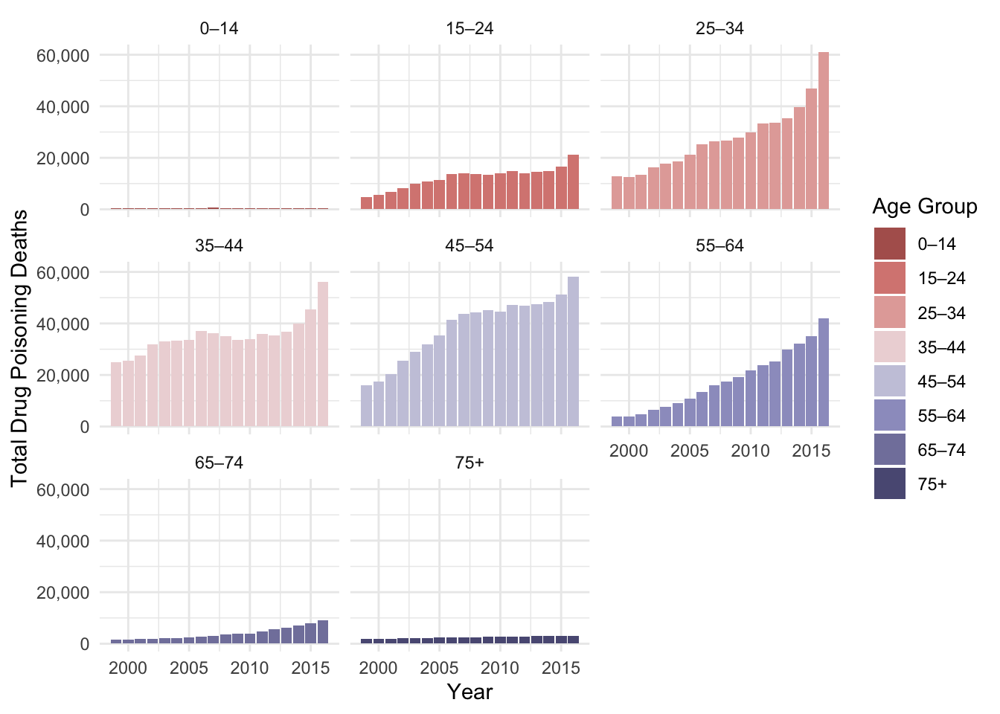

Written Report - Final Project
Introduction
In 2023, the opioid crisis was declared a matter of “national health emergency”. But the American opioid crisis has been a major public health issue long before 2023. Marked by a significant rise in drug poisoning deaths over the past few decades, this epidemic began in the late 1990s when pharmaceutical companies reassured the doctors and prescribing health workers that opioid pain relievers were not highly addictive, leading to widespread over-prescriptions to treat those in pain. Because of the misinformation about the addictive nature of these prescription opioids, such as OxyContin and Vicodin, as well as their increased availability, misuse was inevitable. Over time, patients who became addicted to prescription opioids often transitioned to cheaper, more accessible alternatives like heroin and synthetic opioids such as fentanyl.
By the 2010s, the crisis had escalated. The Centers for Disease Control and Prevention (CDC) identified three distinct waves of opioid-related deaths:
- 1999–2010— Marks the genesis of the opioid crisis with rising deaths from prescription opioids
- 2010–2013 — A surge in heroin use and overdose deaths as access to prescription opioids became restricted
- 2013- Present — The rapid rise of deaths due to illicitly manufactured fentanyl (synthetic opioid overdose), which is far more potent than heroin or prescription opioids. Yet fentanyl is exponentially more dangerous because of its intense potency in small quantities – making it lethal.
National public health agencies, like the CDC, are able to report the numbers of deaths in the United States because of the death certificate reporting process, which involves the use of International Classification of Diseases, Tenth Revision (ICD–10) codes. “Drug-poisoning deaths are defined as having ICD–10 underlying cause-of-death codes X40–X44 (unintentional), X60–X64 (suicide), X85 (homicide), or Y10–Y14 (undetermined intent)” (CDC). According to National Library of Medicine article “Defining indicators for drug overdose emergency department visits and hospitalisations in ICD-10-CM coded discharge data”, the diagnosis code being used for drug poisoning cases would begin with the letter T, “drug poisoning T-codes” indicate “poisoning by unspecified drugs, medicaments and biological substances, accidental (unintentional), initial encounter” (Vivolo-Kantor et al.).
In the dataset I have chosen: “Drug Overdose Death Rates by Drug Type, Sex, Age, Race and Hispanic Origin in the United States (1999 – 2016)”, the CDC reports 2862 observations (rows) of 19 variables (columns), such as crude and age-related death rates related to drug poisoning, the states reporting these deaths, and the demographic data from each individual – involving salient identity factors like race and Hispanic origin, sex, and age. These variables will be vital to exploring which US region has seen the largest influx of drug poisoning mortality rates in comparison to the US crude rate of drug poisoning mortality. Public health uses epidemiological data analysis to inform which demographics are most at risk and target prevention efforts in populations with similar characteristics.
Questions of Interest:
To focus my data analysis skills on this comprehensive dataset, four questions guide my research on who is most affected by drug mortality:
Over time (1999-2016) and in consideration of all ages and all origins, which regions of the United States have had the greatest increase of drug poisoning death rates?
Throughout the United States, is there a strong association with Hispanic origin and drug mortality?
How do drug poisoning death counts compare between men and women nationally from 1999-2016?
Which age ranges see the most drug poisoning deaths?
Methods
How and Where the Data Were Acquired
This public access dataset was created by the National Center for Health Statistics (NCHS) in December 2017, and available on the CDC Data website, linked on my website’s About page. Among the NCHS content on this database, a plethora of drug poisoning mortality datasets and visualization tools are available to assess the opioid crisis under different lenses. For this dataset, multiple variables of interest were included like sex, age, race and Hispanic origin, and region. This made this specific dataset the most attractive because of its amount of information available.
Cleaning and Wrangling the Data
Understanding the NA Values
In cleaning the dataset, checking for NA values is an important step. Using the two functions: colSums(is.na(drug_mortality)), there is an equal amount of NA values across the variables named Age-adjusted Rate, Standard Error for Age-adjusted Rate, Lower Confidence Limit for Age-adjusted Rate, and Upper Confidence Limit for Age-adjusted Rate. The age-adjusted rates are missing for many entries, and the decision to filter them out or use an alternative rate (like crude rates) must be made.
This equal amount of 1728 NA values is due to how age-adjusted rates cannot be calculated without the known weight of each age group within a population each year. When assessing the dataset, the NA values only occur when matched with the national data (when the State variable value is equal to “United States”) as well as when the Age Group variable is a numbered age range other than the value “All Ages”. Because all of the NA values are related to the age-adjusted rates, this is not an issue for using the data. Deleting the data with NA values would be a mistake as it augments our understanding of the true data, and imputing the data to be the mode or mean of similar characteristics is not possible because it would not be accurate to what the variables measure.
Crude death rates will be used instead when considering specific states and specific age ranges and when considering the national data, the variable US Crude Rates will be used.
Removing Irrelevant Variables
Next in cleaning the data, I opted to remove two columns (variables) because they were not relevant to the data being analyzed. The Unit and State Crude Rate in Range variables will not be necessary in this project because of our intended research question and scope of our data analysis. The original dataset’s Unit variable has only one value of “per 100,000 population”. This does not fill any gaps of information that another variable cannot inform, and removing this variable is not a loss in the greater scope of the data. The variable State Crude Rate in Range is not relevant to the question of interest as we are considering regions in the United States instead of individual states as well as the comparison to the US Crude Rate, the State Crude Rate in Range variable is also repetitive and contains excess information.
Checking the Structure of the Data
After cleaning the data and using the functions: str(drug_mortality[sapply(drug_mortality, is.character)]), six variables were loaded in as chr (character or text) variables: State, Sex, Age Group, Race and Hispanic Origin, State Crude Rate in Range, and Unit. The last two variables have been removed. Using the functions: str(drug_mortality[sapply(drug_mortality, is.double)]), 13 variables were loaded in as dbl (double or numeric with decimal) variables: Year, Deaths, Population, Crude Death Rate, Standard Error for Crude Rate, Lower Confidence Limit for Crude Rate, Upper Confidence Limit for Crude Rate, Age-adjusted Rate, Standard Error for Age-adjusted Rate, Lower Confidence Limit for Age-adjusted Rate, Upper Confidence Limit for Age-adjusted Rate, US Crude Rate, and US Age-adjusted Rate.
Wrangling the Demographic Data
Seeing that the Sex, Race and Hispanic Origin, and Age Group variables are character or text variables and have repeat values, I decided to create these variables as factors where repeated values are then organized into categories (i.e. Sex the values: “Both Sexes”, “Female”, and “Male”). This will make calling on these variables in the future easier, like in the instance of comparing drug mortality rates between the male and female sexes. Using the function: str(drug_mortality), I was able to authenticate the conversion of variables to categorical variables where the variables values were listed by each unique value (i.e. the Sex variable should only have 3 values if done correctly).
In the case of the variable “Race and Hispanic Origin” (RHO), values like All Races - All Origins, Non-Hispanic Black, Non-Hispanic White, and Hispanic were all present in this column. To combat the excess of wordings to get information about this variable, I opted to create a new categorical variable (new column) named Hispanic and assign values whether the individual is of Hispanic origin or not. When the RHO column indicated only the word “Hispanic” the value would be 1, while the value would be 0 if the RHO column indicated “Non-Hispanic” along with their race, or if it indicated “All Races - All Origins”.
For the Age Group variable, I wanted to know which age ranges were already sorted by the original data set and if I needed to make any new adjustments to the data. Using the functions unique(drug_mortality$Age Group), I was able to retrieve all possible values in the Age Group variable which were 9 values: “All Ages”, “0–14”, “15–24”, “25–34”, “35–44”, “45–54” ,“55–64”, “65–74”, “75+” . Due to the even distribution of these given age ranges, I decided to keep the age ranges as it is to use for further data analysis and comparison to drug poisoning mortality.
Representative States for U.S. Regions
One of this project’s research questions of interest asks what regions have had the greatest increase in drug poisoning mortality, I divided all 50 states (and the District of Columbia) into their respective US regions according the how the CDC defines the geographic regions in the United States. In order to gain a more comprehensive look at the data presented, and accurately create a visualization of the data, the use of all 50 states (and additional territory of the nation’s capital, Washington D.C.) is necessary.
In the State variable, “United States” is also included as a value which indicates that data of those rows are national data. Instead of calculating average drug mortality rates from the State variable with the value United States, the US Crude Rates variable (which is defined in this dataset Total drug poisoning deaths per 100,000 people) exists to compare the defined regions to the national rates.
Tools Used for Data Exploration
The use of the R software package ggplot2, the interactive package plotly on my website, and custom color palettes from R Color Brewer and the package paletteer all helped extensively in displaying the following graphs to inform my project’s questions of interest.
Results
Figure 1 Analysis
This graph categorizes all 50 states and the District of Columbia into the four US regions: Midwest, Northeast, South, and West — each of them represented by the blue dashed lines, which will be used to properly assess the drug poisoning mortality rates of each region. These regions are compared to the national average crude death rates (per 100,000), which is visually represented by the red line. When ranking the steepness of linear slopes of each region’s linear slopes, the South US region has the second steepest slope, then the National mortality rate, then the Midwest, and lastly,finally the West. The faceted graphs visualizes the slopes clearly where its steepness can be compared separately. With this, we can can conclude that the Northeast region has had the greatest increase in mortality rates, as indicated by the steep slope of its line (large increase over a smaller period of time) as well as the magnitude of the mean death rate value. Magnitude in this case refers to how Northeast approaches 30 deaths per 100,000 at its peak in the year 2016, whereas each of the other regions’ peaks have lower values – West: 16.70, Midwest: 16.76, National: 19.7, South: 22.99 (Website: Interactive Figure 1).

Figure 2 Analysis
To further analyze these regions’ trends in drug poisoning mortality, a combined line plot can be used to discover each region’s drug mortality rates’ relationship to each other. At first glance, the national average is visually distinct in the middle of the data with a bold red line. Due to the proper use of the provided US Crude Rates variable, this line is an average of the four US regions and is appropriately centered within the data. While all regions included in this graph generally increase over time, more specific trends must be analyzed.
From 1999 to 2016, the Midwest region consistently had the lowest average drug poisoning mortality rate, peaking in 2016 at 16.7 deaths per 100,000 people, matching the West’s peak. The South region began with the second-lowest rate in 1999 (5.36 deaths per 100,000) but experienced one of the sharpest increases, becoming the second highest by 2016. Key spikes in the South’s mortality occurred in 2005, 2009, and 2012, aligning with the three waves of the opioid epidemic. Meanwhile, the West initially led with the highest rate in 1999 (8.11 deaths per 100,000), but its trend plateaued after 2011, remaining relatively stable between 15.82 and 16.7 deaths per 100,000 (Website: Interactive Figure 1).
The Northeast region mirrored the national average until 2012, when its death rate surged dramatically, reaching 13.6 deaths per 100,000 and then, intersecting the South and West regions by 2013, marking the third wave of the opioid epidemic. This region continues to rise by 2016, nearing 28 deaths per 100,000. This sharp rise underscores the epidemic’s disproportionate impact on the Northeast and highlights its vulnerability during this period. These trends reflect the evolving geographic dynamics of the crisis, with the Midwest remaining least affected, the South showing rapid growth, and the Northeast experiencing a late but severe escalation (Website: Interactive Figure 1).

Figure 3 Analysis
When analyzing the bar plot, the slope reflects the direction and strength of the relationship between race/ethnicity and drug poisoning mortality rates. The data for Hispanic, Non-Hispanic Black, and Non-Hispanic White populations all exhibit positive slopes, indicating increasing drug-related death rates over time, but the steepness of these slopes varies. Notably, the Non-Hispanic White population has the steepest slope, signifying the strongest association with drug mortality rates. This group’s mean crude death rate begins a significant rise around 2011, consistent with the timing of the opioid epidemic’s later waves. In contrast, the Hispanic population has the weakest association, with a slope closer to horizontal, indicating a relatively slower increase in drug-related mortality over the same period.
The Non-Hispanic Black population shows a more complex trend, with an inflection point in 2006 marking a temporary peak followed by a decline. Between 2006 and 2012, this group’s mortality rate stabilized within a narrow range (7.94 to 9.17 deaths per 100,000), until 2012, when rates began to climb sharply. This pattern mirrors trends observed in other regions, such as the South and Northeast, where drug mortality rates increased dramatically starting in 2012. These findings highlight distinct patterns across racial and ethnic groups, emphasizing the disproportionate impact of the opioid crisis on Non-Hispanic Whites while signaling evolving trends for other populations (Website: Interactive Figure 2).

Figure 4 Analysis
This bar plot above is faceted by the data’s Sex variable, where the total count of drug poisoning deaths of both Male and Female sexes is seen on the left hand, gray bar plot, and each sex is assigned a color for specification (pink for Female, and blue for Male). From 1999 to 2016, drug poisoning deaths increased significantly across all sexes and age groups, with notable disparities. Males consistently experienced higher death counts than females, with their rise becoming especially steep after 2010. Females experienced a steadily increasing death rate with drug poisoning.

Figure 5 Analysis
Among age groups, middle-aged individuals (25–54) saw the largest increases, particularly those aged 25–34 and 45–54, while older groups (55–64, 65–74, and 75+) experienced slower but steady growth. Younger groups (0–14 and 15–24) were less affected, though deaths in the 15–24 range began rising notably after 2005. These trends suggest that middle-aged males are the most affected demographic, requiring focused interventions, while the growing rates in younger and older populations indicate a broadening scope of the crisis.
Younger Age Groups (0–14, 15–24):
The 0–14 age group has minimal drug poisoning deaths across all years, with no significant upward trend. The 15–24 age group shows a steady increase, especially after 2005, indicating growing involvement or vulnerability of this demographic.
Middle Age Groups (25–34, 35–44, 45–54):
These groups exhibit the steepest increases in total deaths, particularly 25–34 and 45–54, which display significant jumps post-2010.
Older Age Groups (55–64, 65–74, 75+):
Death counts also rise among older groups, particularly in the 55–64 range. The 65–74 and 75+ groups see less pronounced increases.
Conclusion
This project’s findings highlight the evolving and disproportionate impacts of the opioid epidemic across U.S. regions, racial/ethnic groups, and demographics like sex and age. The Northeast region experienced the sharpest rise in drug poisoning mortality rates, surpassing all other regions by 2016 with nearly 28 deaths per 100,000 people, and emphasizing its vulnerability during the epidemic’s third wave. The South showed the second-highest increase, with significant spikes coinciding with key waves of the crisis. In contrast, the Midwest consistently had the lowest rates, while the West plateaued after 2011. Among racial groups, Non-Hispanic Whites exhibited the steepest rise in mortality, underscoring their heightened association with drug-related deaths. Non-Hispanic Blacks showed a more complex trend, with periods of stabilization, while Hispanics remained least affected. Across sex and age groups, males were disproportionately impacted, and middle-aged adults (25–54 years) experienced the steepest increases, although deaths among younger and older populations also grew.
Public Health Challenges and Targeted Interventions
Public health responses to the declaration of a national health emergency have affected populations, yet some regions of the United States may have more ease of accessing health care arising from policy like increased regulation of opioid prescriptions, efforts to expand access to treatment for opioid use disorder, and the distribution of naloxone — a life-saving medication that can reverse opioid overdoses. Despite these efforts, drug poisoning deaths have continued to rise in the last decade, exacerbated by the increasing presence of synthetic opioids like fentanyl noted as the “third wave” of the opioid epidemic.
These trends underscore a pressing public health crisis, requiring targeted interventions to address the most affected populations and regions. The opioid crisis undoubtedly disproportionately affects certain demographics, with higher rates among middle-aged adults, non-Hispanic whites, and men. Middle-aged males, particularly in the Northeast and South, are critical groups for prevention and treatment strategies. The increasing rates among younger (15–24) and older (55+) populations indicate the epidemic’s widening scope, necessitating broader outreach and education. Additionally, racial disparities point to the need for culturally sensitive approaches to mitigate drug-related mortality among Non-Hispanic Whites and emerging vulnerabilities in other groups. Focused, region-specific initiatives, along with enhanced surveillance and resource allocation, are vital to curbing the ongoing epidemic.
References
Centers for Disease Control and Prevention. CDC Wonder: Underlying cause of death 1999–2016. Available from: http://wonder.cdc.gov/wonder/help/ucd.html.
Centers for Disease Control and Prevention. (2024, July 8). NCHS Data Visualization Gallery - drug poisoning mortality. Centers for Disease Control and Prevention. https://www.cdc.gov/nchs/data-visualization/drug-poisoning-mortality/
National Center for Health Statistics. National Vital Statistics System: Mortality data. Available from: http://www.cdc.gov/nchs/deaths.htm.
“Understanding the Opioid Overdose Epidemic.” Centers for Disease Control and Prevention, 5 Apr. 2024, www.cdc.gov/overdose-prevention/about/understanding-the-opioid-overdose-epidemic.html.
Vivolo-Kantor, A., Pasalic, E., Liu, S., Martinez, P. D., Gladden, R. M., & Overdose Morbidity Team (2021). Defining indicators for drug overdose emergency department visits and hospitalisations in ICD-10-CM coded discharge data. Injury prevention : journal of the International Society for Child and Adolescent Injury Prevention, 27(S1), i56–i61. https://doi.org/10.1136/injuryprev-2019-043521